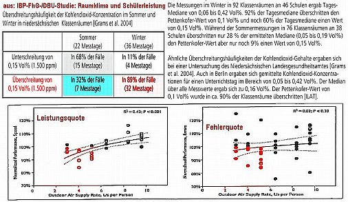
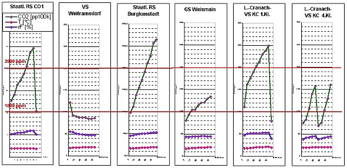
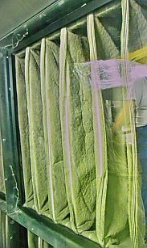
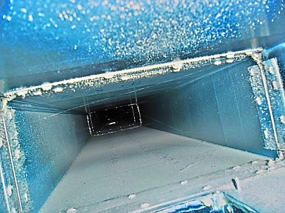
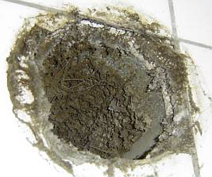
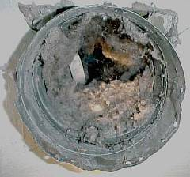
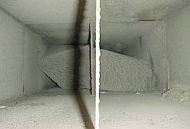
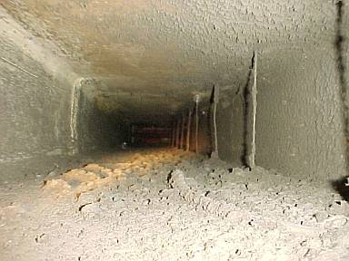
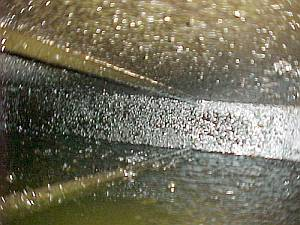

Weitere Datenübertragung Ihres Webseitenbesuchs an Google durch ein Opt-Out-Cookie stoppen - Klick!
Stop transferring your visit data to Google by a Opt-Out-Cookie - click!: Stop Google Analytics
Cookie Info. Datenschutzerklärung


 Altbau und Denkmalpflege Informationen - Startseite / Impressum
Altbau und Denkmalpflege Informationen - Startseite / Impressum
Inhaltsverzeichnis - Sitemap - über 1.500 Druckseiten unabhängige Bauinformationen
Die härtesten Bücher gegen den Klimabetrug - Kurz + deftig rezensiert +++
Bau- und Fachwerkbücher - Knapp + (teils) kritisch rezensiert
EnEV-Befreiung gem. § 25 (17 alt)! +++
Fragen? +++
Alles auf CD
27.10.06: DER SPIEGEL: Energiepass: Zu Tode gedämmte Häuser
20.3.08: WELT: "Teure Dämmung lohnt oft nicht - Klimaschutz: Eigenheimbesitzer können bei Umbauten eine Ausnahmegenehmigung erwirken" - Mit Aggen, Meier + Fischer!
2.3.08: WELT am Sonntag/WAMS: "Der Schimmel breitet sich wieder aus. - Starke Dämmung in Neubauten und falsches Lüften führen schnell zu Parasitenbefall" - Mit Aggen, Meier + Fischer!
Kostengünstiges Instandsetzen von Burgen, Schlössern, Herrenhäusern, Villen - Ratgeber zu Kauf, Finanzierung, Planung (PDF eBook)
Altbauten kostengünstig sanieren -
Heiße Tipps & Tricks gegen Sanierpfusch im bestimmt frechsten Baubuch aller Zeiten (PDF eBook + Druckversion)

Altbautaugliche Verfahren und Baustoffe Kapitel 3 + 4 + 5
Kapitel: Fensterprobleme: [1. Alte Fenster - Erneuern oder Erhalten?] [2. Die Schadensfolgen moderner Fenster
- Betrug am Kunden durch Schwachverstand? Problem: Klimatisierung + Lüftungsanlage]
[3. Thema Glas] [4. Historische Bleiglasfenster]
[5. Tendenzen der Fensterperversion - Lüften / Dichten]
[6. Feuchte- u. Energieproblematik am Fenster] [7. Zu guter Letzt - warum gute Fenster weggeschmissen werden]
Holzanstrich: [8. Geeignete + ungeeignete Farbsysteme auf Holzuntergründen im Innen- u. Außenbereich]
[9. Fensterhandwerk - quo vadis?]
[10. Hinweise zum Fachwerkanstrich außen / Rostschutzfarbe - Anstrich auf Eisen]
Fensterbestandsaufnahme + Instandsetzungsplanung: [11. Bestandsaufnahme + Ausschreibung zur Erhaltung alter Fenster]
[12. Praxistaugliche Bestandsaufnahme von Fensterkonstruktionen - Anforderungen + Ziele]
[13. Arbeitsvoraussetzungen der Bestandsaufnahme historischer Fensterkonstruktionen]
[14. Reparaturplanung für alte Fenster]
[15. Kostenberechnung + Ausschreibung für die Instandsetzung historischer Fensterkonstruktionen]
Holzschutz:[16. Holzschutz ohne Gift]
[17. Giftfreien Holzschutz gegen Widerstände verwirklichen]
[18. Sind zugelassene vergiftete Holzschutzmittel unschädlich? / Surftips für Dialektiker - Gegenteilige/Ergänzende Links - Nix + niemand glauben - Bilden Sie sich eine eigene Meinung]
Das Handwerkerquiz + Das Planerquiz für schlaue Bauherrn
Die Schadensfolgen moderner Fenster - Problem Lüftungsanlage + Klimaanlage, kontrollierte Wohnraumlüftung [2]
Teuer krankmachende Anlagentechnik mittels Klimatisierung und Lüftungsanlage statt normaler Fensterlüftung
nach alter Väter Sitte?
 Die Mehrzahl aller Bauschäden entstehen nach
dem Bauschadensbericht der Bundesregierung (4. Manuskriptfassung 8/95) durch Schimmelpilze nach Fenstererneuerung. Außerdem ergeben
sich langfristige Bau- und Gesundheitsschäden bei dem nur auf Abdichtung zielenden
Fensteraustausch. Inzwischen werden von interessierten Kreisen - wie in Schweden schon vollzogen - gesetzliche Maßnahmen zur
anlagentechnischen Entlüftung der vorschrifts- und DIN-gemäß übertrieben abgedichteten Aufenthaltsräume gefordert. Das
Einfamilienhaus mit Lüftungsmaschinerie. Die Anlagentechniker jubeln.
Die Mehrzahl aller Bauschäden entstehen nach
dem Bauschadensbericht der Bundesregierung (4. Manuskriptfassung 8/95) durch Schimmelpilze nach Fenstererneuerung. Außerdem ergeben
sich langfristige Bau- und Gesundheitsschäden bei dem nur auf Abdichtung zielenden
Fensteraustausch. Inzwischen werden von interessierten Kreisen - wie in Schweden schon vollzogen - gesetzliche Maßnahmen zur
anlagentechnischen Entlüftung der vorschrifts- und DIN-gemäß übertrieben abgedichteten Aufenthaltsräume gefordert. Das
Einfamilienhaus mit Lüftungsmaschinerie. Die Anlagentechniker jubeln.
Dabei wird so gut wie allgemein übersehen, was die bekannten hygienischen Probleme rund um gelüftete Gebäude sind, ich nenne mal nur
als Beispiel das Sick-Building-Syndrome und die nosokomiale (im Krankenhaus erworbene) Infektion in Krankenhäusern und Spitalen durch
sogenannte Krankenhauskeime, die nun wirklich mehr als ausreichend Krankheiten bis hin zu jährlich tausenden Todesfällen alleine in
Deutschland verursachen. In Operationsräumen mit üblichen Lüftungsanlagen ist bekanntermaßen die Belastung mit
gesundheitsgefährdenden Keimen oft so hoch, daß postoperative Wundinfektionen die sich daraus nahezu zwangsläufig ergebende Folge
sind. Ein spezielles Problem sind schimmelpilzbedingte Vergiftungen, bei denen die Schimmelbrut in der Lüftung die eigentliche
Ursache sind. Man nennt diese Fallgruppe nosokomiale Aspergillose, Fachleute sprechen vom
"Risiko
von nosokomial aerogen erworbenen invasiven Pilzinfektionen" und fordern als Prävention HEPA-gefilterte Atemluft für die
Krankenstationen mit Risikopatienten.
Sehr treffend schildert die Kurzfassung des Aufsatzes von Uwe Münzenberg
"Innenraumbelastungen durch Luftundichtigkeiten in Gebäuden"
in IKZ Haustechnik Magazin für Gebäude- und Energietechnik, Jg.: 64, Sondernr., 2011, Seite 22-24 die viel zu oft übersehene
Problematik bei Lüftungsanlagen wie folgt:
"Probleme mit Schadstoffen, Geruchsbelästigungen und Schimmelpilzbefall in Gebäuden sind nicht neu. Ein hingegen häufig
unterschätztes Problem ist, dass die Ursache für derartige Innenraumbelastungen sich nicht automatisch auch im selbigen Raum befinden
muss, in dem die Probleme wahrgenommen werden. Luftundichtigkeiten innerhalb eines Gebäudes transportieren über interzonale
Luftströmungen Innenraumbelastungen in andere Räume und erschweren so die Ursachenermittlung erheblich. Nicht selten ist die
Lüftungsanlage schuld an dem Dilemma." Dem ist erst mal nix hinzuzufügen.


Nun kennen wir alle die berühmten Schulkrankheiten - nein, nicht das Schwänzen, Spicken und Hausaufgabenvergessen - sondern alles, was
Schüler von der Schule mit nach Hause bringen wie Erkältung, Grippe, Masern, Röteln und so weiter und so fort, eben die typischen
Ansteckungskrankheiten, die sich im sprichwörtlichen Schulmief rasant verbreiten können. Das durch "schlechte" Luft nur dürftig
gekennzeichnete miese Innenraumklima in überdicht zu Tode energiegesparten Schulklassenzimmern (in Wahrheit ohne jeden nennenswerten
Spareffekt, es sei denn, die einst supermies geplante Heizung wurde endlich optimiert) trägt ja mit die Hauptschuld an dem rasanten
Ausbreiten derartiger Infektionen, die - wer hätte das gedacht - vorzugsweise zur Heizsaison in unseren Schulen und selbstverständlich
auch Kindergärten Einzug halten. Warum? Weil schlechte Luft das Immunsystem stark überlastet und so das Ausbreiten der
Infektionserkrankungen begünstigt. Unter Ärzten ein Thema, in den Schulen selbst noch viel zu wenig und in den klimaschutzfixierten
Bauverwaltungen und Planungsbüros könnte es ebenfalls noch besser sein, oder?
Die berühmt-berüchtigte und vielzitierte Großuntersuchung an Schulen in Kopenhagen im Hinblick auf den Krankheitsstatus ihrer Schüler
hinsichtlich typisch gebäudespezifischer Symptome wie Irritationen (Reizungen) an Augen, Nase und Haut, Verstopfung der Nasen,
Kopfschmerzen und Konzentrationsschwierigkeiten fand heraus, daß bei den Schulen mit den geringsten Krankheitsfällen nur 20% der
untersuchten Räume mechanisch (also anlagentechnisch) gelüftet wurden, im krassen Unterschied zu den Schulen mit den meisten
Krankheitsfällen mit 52% Lüftungsanteil (vgl. Meyer, H.W., Allermann, L., Nielsen, J.B., Hansen, M.O., Gravesen, S., Nielsen, P.A.,
Skov, P., Gyntelberg, F.: Building conditions and buildingrelated symptoms in the Copenhagen school study. Indoor Air ‘99: Proceedings
of the 8th International Conference on Indoor Air Quality and Climate, 2, 298-299, zitiert nach
Fraunhofer Institut für Bauphysik, Sedlbauer et al.:
"Raumklima und Schülerleistung", darin auch weitere Nachweise vorzugsweise aus Schweden und Dänemark, die auf die
nachteilige Wirkung schlechter Lüftung auf den Krankheitsstatus und die Leistungsfähigkeit von Schülern in Schulräumen hinweisen).
Ein berühmt gewordenes Beispiel des frechen Anschlages auf Volkswirtschaft und Volksgesundheit durch das von Edgar Gärtner in
"Ökonihilismus 2012" entschlüsselte Selbstmordprogramm der Ökoschmarotzer und ihrer abergläubigen Anhänger allerorten durch
Passivhausbaukunst ist eine Schule in Senftenberg - das erste "vollständige Passivhausschule":
Daß es hier um irre Technik geht, gibt die Lausitzer Rundschau am Februar 2011 in
"Herr im Technik-Labyrinth -
Hausmeister war gestern" kund und berichtet:
"... viele Kilometer Leitungen und Rohre ... Schalt- und Regelungstechnik ... Hausmeister ... wäre im SeeCampus restlos
überfordert ... Elektroniker, ist Haustechniker. Zu seinen Aufgaben gehört mehr als das Reparieren von Steckdosen. Ob automatische
Lüftung des Passivhauses, Zusatzheizungen, Beleuchtung, Sicherheitstechnik oder Akustikanlage - der Fachmann steuert das gesamte Haus.
... gespannt, ob der modernste Schulbau des Landkreises technisch so funktioniert, wie es die Planer auf den Rechner gebracht haben
... (keine) Aussage, wie sparsam das Passivhaus tatsächlich sein wird ..."
Daß man hier besonders wehrlose und besonders wendegeschädigte Ossis als Guinea-Pigs (Versuchskarnickel) der Ökoparasiten nutzen
konnte, verharmlost die Lausitzer Rundschau kurz nach Inbetriebnahme am 14. Februar 2012 noch als
"Kampf mit Startproblemen"
und berichtet von den Verantwortlichen für die Passivtechnik, die offenbar darauf setzen, daß sich die Schüler eben an die nachteiligen
Passivhausbedingungen anpassen müssen: "Allein die Feineinstellung von Heizung und Lüftung während der Jahreszeiten mit
unterschiedlichen Schülerzahlen werde ein Jahr dauern. "Wir kennen alle Probleme und sind dabei, sie zu lösen ... In so einem neuen
Gebäude, das auch noch ein Passivhaus ist, ist vieles auch eine Sache der Gewöhnung.""
Ach so, man kennt hier wohl den alten Judenwitz von der neuen Ziege:
Der Rabbi besucht den Schmul, der vor kurzem eine Ziege gekauft hat. Da er keinen Stall hat, wohnt sie mit in der Stube. Sagt der
Rabbi: "Abär Schmul, hast du doch fast keinän Platz, wohnen doch schon deinä Rachäl und deinä sächs Kindär mit in Stube." Darauf
der Schmul ganz stolz: "Platz ist genug." Sagt der Rabbi: "Abär dänk' doch, där Gästank!" Antwortet Schmul: "Wird sich Ziegä
gewähnen müssän."
Und so geht es nach diesem Motto fröhlich weiter: In
"Experimentierfeld
SeeCampus" berichtete das Blatt am 17. Februar 2012 erneut von der gesundheitsgefährdenen Passivschule: "Für Frischluft
wird nicht per Fensteröffnen gesorgt. Technik steuert das Abpumpen verbrauchter Luft und die Zufuhr frischer. Schüler beklagen Fiepen
und Brummen der Anlage. "Die Luft ist unangenehm", kritisiert Schulsprecherin Carolin Warstat.".
Am 28. Juni 2011 läßt die Lausitzer Rundschau dann in
"Dicke Luft im
SeeCampus in Schwarzheide" die Sau raus (Auszug):
"Schüler und Lehrer grault es vor jedem Schultag... versagt bei einer Person im Raum das Deodorant, liegt
die halbe Klasse im Koma. Belüftung im Vorzeige-Passivschulhaus ist eine Katastrophe. Frischluftmangel herrscht extrem an heißen
Tagen. Aus Sorge um die Gesundheit ihrer Kinder, die über Kopfschmerzen und Müdigkeit klagen, erwägen Eltern, den Schulbetrieb im
Gebäude auf dem Rechtsweg zu stoppen. ... an Sommertagen völlig überhitzt und auch sonst schlecht belüftet. Kopfschmerzen und
Kreislaufprobleme bei Schülern und Lehrern sind die Folge. Der Krankenstand steigt. ... "Probleme werden heruntergespielt und
ignoriert. Die Luft ist trocken. Wegen des Sauerstoffmangels haben viele Schüler ständig Kopfschmerzen. Die Konzentration ist hin. Wie
soll man da einen ordentlichen Abschluss machen?" ... "Es ist stickig warm, die Luft reicht kaum zum Atmen. Nach drei Minuten war ich
bereits durchgeschwitzt" ... "
Und dann passiert was. Die Lausitzer Rundschau berichtet in
"Lüftung
des SeeCampus in Schwarzheide ist überarbeitet worden" u.a.: "Ein Getriebebruch am Rad des zentralen Lüfters, über den die
von außen angesaugte Frischluft im Sommer abgekühlt wird, hat an den Hitzetagen vor den Schulferien zeitweise für ein als unerträglich
empfundenes Raumklima im SeeCampus Niederlausitz gesorgt. Die Startschwierigkeiten beim Einregeln der Technik des Passivschulgebäudes
potenzierten sich damit noch. ... Die Mängel, die heftige "und teilweise auch berechtigte Kritik" am Raumklima hervorgerufen hatten,
wie (Landrat) Heinze sagt, haben Eigentümer und Betreiber der Passivhausschule bestmöglich abgestellt. Schüler und Lehrer hatten nach
längerem Aufenthalt im Schulhaus über Kopfschmerzen, Kreislaufprobleme und Müdigkeit geklagt. ...".
Genau diese Schule befriedigt nun das Wohlgefallen der Ökoparasiten in vorhersehbarer und verdächtig bekannter Weise. Die Lausitzer
Rundschau berichtet am 22. Juni 2012, nachdem zwischendurch nichts Konkretes mehr zur Funktionsfähigkeit und auch nicht zum
angeblichen Niedrigverbrauch herauszubekommen ist - obwohl nun eine Jahresabrechnung zu überblicken wäre:
"SeeCampus
erhält Silber-Zertifikat für nachhaltiges Bauen". Die Deutsche Gesellschaft für nachhaltiges Bauen (DGNB) verleiht das, die BASF-
Pressemeldung dazu lobpreist: "Der SeeCampus ist das erste nach Passivhausstandard errichtete Schulgebäude Deutschlands, das in
öffentlich-privater Partnerschaft realisiert wurde." - nur diskret erscheint der massive BASF-Schub hinter dem Projekt, denn
ein Vertreter der ortsansässigen BASF in Schwarzheide überreicht das versilberte "Zertifikat". Herrlich das Lobhudelgeseiere, mit dem
die Probleme kaschiert und übertünscht werden: "Walter Haase vom Institut für Leichtbau Entwerfen und Konstruieren der Universität
Stuttgart sagt über die Bewertung: "Die Ergebnisse der Untersuchungen zeigen zugleich Potenziale für weitergehende Verbesserungen auf.
Damit wird es möglich sein, den Leuchtturmcharakter des Projektes zu manifestieren.""
All das erinnert doch sehr an die BASF-Vorgängerin IG Farben, die die KZ-Insassen in der Buna-Fabrik in Auschwitz-Monowitz als Zwangsarbeiter
bis zum bitteren Ende austesten konnte. Eigentlich schauerlich und gräßlich. Da tut ein weiterer Lobhudelpreis der Deutschen Energie
Agentur dena besonders gut. Sie verleiht dem Landkreis Oberspreewald-Lausitz als Bauherren des Passivhausmonsters nur kurz nach dem
Silberzertifikat den "Preis für Energieeffizienz". Klappern gehört eben auch zum Totengräberhandwerk. Aus der Laudatio, zitiert nach
der Lausitzer Rundschau vom 20. September 2012
"SeeCampus
erringt Preis für Energieeffizienz":
"... eine stark gedämmte Außenhülle, die einen Wärmeverlust weitgehend verhindert, und eine kontrollierte Raumlüftung mit
hocheffizienter Wärmerückgewinnung. "Die Schüler profitieren von einer modernen Lernatmosphäre ...""
Ein kleiner Nachtrag noch zum Thema IG Farben: Wie wir der Dokumentation von Karl Heinz Roth
"Die I.G. Farbenindustrie AG von 1933 bis 1939"
entnehmen können, wurde die unverschämte und gewinnorientierte Einflußnahme der Industriekonzerne auf die Regierung ohne Rücksicht auf Verluste damals
perfekt einstudiert und entwickelt: "Parallel zu ihrer Scheckbuchoffensive [KF: Bestechung der Parteibonzen] und zur lautstarken Selbstnazifizierung ih-
rer Betriebsgemeinschaften [KF: Quasi Ausrottung aller Nichtarier aus der dann judenfreien Konzernwirtschaft] startete die Konzernführung Aktivitäten, um auf
die wirtschaftspolitischen Weichenstellungen des neuen Regimes [KF: Wie heute - Beeinflussung der Gesetze- und Verodnungsmacherei sowie der Staatssubventionen
inklusive Übernahme der Verlustrisiken seitens des Staates zugunsten einer ungehemmten Gewinnsucht der Wirtschaft] Einfluss zu nehmen und das konkrete
Garantieversprechen für Leuna [KF: Subvention und Risikobeteiligung des Staates an der neuartigen Energiegewinnungstechnik - Braunkohlehydrierung und -vergasung
u.a. zu Treibstoffen für Motoren, später in Auschwitz mit den dortigen Lagerinsassen technisch perfektioniert] einzulösen." Lesen Sie die angegebene Quelle, um
das Nazitreiben der Wirtschaft heute im Einklang mit dem ökofaschistischen Regierungsapparat inklusive der ökologistisch gleichgeschalteten Medien besser zu verstehen. Jedem nach Gerechtigkeit, Wahrheit und Liebe strebenden Zeitgenossen müssen
sich dabei die Haare sträuben! Gehören Sie dazu, oder hat Sie ihre Todesangst und/oder Ihr Egoismus auch schon in den Ökomainstream getrieben? Sie dürfen
sich diese ganz und gar unverschämte Frage gerne selber beantworten. Zum "Wehret den Anfängen" ist es freilich wieder mal zu spät. Deswegen wird hier wenigstens
etwas gegen den sich abzeichnenden Untergang geschrieben. Mehr geht nun wirklich nicht, oder? Hier finden Sie übrigens reichlich mehr Stoff zum unseligen
Treiben urdeutscher Wirtschaftsführer und Polittrucks, das in seinen wesentlichen - gewinngetriebenen Maximen - wohl kaum abweicht von dem, was wir heute als
"Klimaschutz", "Endlösung der CO2-Frage", "Kampf gegen die Globale Erwärmung" und "Umweltschutz mittels Erneuerbaren Energien" auf Kosten der wehrlosen Menschen
und Natur bis ins letzte Deppenkaff und bis zum letzten Herrn Gemeinderat, ja selbstverständlich auch bis zur letzten Frau Gemeinderätin politisch korrekt
bewundern dürfen: Wollheim Memorial
Ein Jahr nach dem Senftenberger Passivschulhaus-Debakel ist dann die Stadt Nürnberg im Fokus der Skandalpresse. Dort (und wo überall
noch) hat man gnadenlos die Millionen aus dem Konjunkturpaket genutzt, um die öffentlichen Schulgebäude mit
erwiesenermaßen wirkungslosen Dämmstoffen zu verschandeln, und damit auch Kinder und Lehrer was davon haben,
die Raumlufthygiene durch irre - teils sogar blowerdoorgestützte - hermetische Abdichtung und neue "Wärmeschutzfenster im Passivhausstandard"
zu "ertüchtigen". Daß dabei die Sauerstoffraten in den Klassenräumen auf bedrohliche Art minimiert werden, wohingegen die
gesundheitsschädlichen CO2-Raten, die Luftfeuchtigkeit, die Keimbelastung, die Schimmelgefahr und die die Belastung mit Luftschadstoffen
aller Art (Bakterien, Keime, Schimmelpilzsporen, sonstige Gase) auf mehr als bedenkliche Höhen getrieben worden sind, habe man vorher
nicht gewußt und versucht das ganze herunterzuspielen. Doch die Medien beißen diesmal an und berichten vom Wahnsinn im Land der
Dichter und Dämmer. In Schleswig-Holstein berichtet der Schleswig-Holsteinsche Zeitungsverlag ausgerechnet am 123. Führergeburtstag,
dem 20. April 2012, vom Angriff der Ökofascho-Sausanierer auf die Gesundheit unserer Pimpfe und Pimpfinnen:
"Sanierte Schulen - Klimaschutz
macht schlechte Luft". Darin heißt wird vom Amtsarzt Dr. Martin Oldenburg berichtet, der im Flensburger Bildungssausschuß
Alarm schlägt:
"Um Energie zu sparen, wurden und werden in Schulen moderne, sehr gut dichtende Fenster eingebaut. Bei geschlossenen Türen wird so ein
natürlicher Luftaustausch nahezu unterbunden. "Früher erfolgte ein Austausch der kompletten Raumluft in etwa zwei Stunden", so
Oldenburg - durch Ritzen und kleine Öffnungen. "Heute dauert es zwei Tage." Dadurch, so der Arzt, "reichern sich Krankheitserreger,
Allergene und Schadstoffe in der Raumluft an, was zu einer Belastung der Schleimhäute führt.""
Und so weiter und so fort zu den perversen Resultaten, die geradezu kriminelle Eiferer des angeblichen Klimaschutzes - in Wahrheit
wohl der hemmungslosen Absahnerei - den wehrlosen Nutzern der "sanierten" Bauwerken hinterlassen.
In Bayern greifen die Nürnberger Nachrichten die energiewendenmäßige Schülerverpestung durch die Ökoabzocker auf. Aus dem Bericht
"Schulen: Keine Luft
zum Lernen - CO2 in gedämmten Schulbauten macht der Stadt Nürnberg zu schaffen" vom 30.08.2012:
"... in einigen energetisch sanierten Schulen in Nürnberg sind die CO2-Konzentrationen viel zu hoch ... Mit Mitteln des
Konjunkturpakets II packte die Stadt Nürnberg insgesamt 25 Gebäude mit Dämmplatten und dichten Fenstern warm ein. Welche Auswirkungen
das auf die Luft in Klassenzimmern haben kann, sei nicht mitbedacht worden, gibt der Leiter des Hochbauamtes zu. ... Tatsächlich
verlangte das Förderprogramm von den Kommunen nicht, über die Anreicherung von CO2 oder Schadstoffen in den Innenräumen der gedämmten
Gebäude nachzudenken. ... Zahlreiche Studien belegten, "dass ohne mechanische Lüftungen bei gleichzeitig stark erhöhter Luftdichtheit
der Gebäudehülle die CO2-Konzentrationen in Klassenzimmern fast nicht mehr in den Griff zu bekommen sind" ... "Mit dem Aufmachen der
Fenster löst man das Problem nicht, weil es viel zu lange dauert, bis sich das CO2 in den Klassenzimmern abbaut.""
Fachleute am Wirken. Und die BILD weiß am 31.08.2012 in
"Grünen
beklagen dicke Luft in vielen Klassenzimmern" zu berichten:
"In vielen Klassenzimmern in Bayern herrscht dicke Luft - und zwar im wahrsten Sinne des Wortes, wie die Landtag-Grünen am Freitag
kritisierten." - und fordern den Einbau elektrischer Lüftungsanlagen. In offensichtlich vollkommener Unkenntnis der damit dann
zusätzlich auftretenden Gesundheitsprobleme.
Auch im Feodor-Lynen-Gymnasium in Planegg, erst großmächtig mit
Konjunktur-II-Mitteln von Ökokonjunkturrittern dick saniert,
werden auf einmal ecklige Luftprobleme berichtet: Schüler fürchten um ihre Gesundheit -
es heißt dort: "Planegg - Schüler am Feodor-Lynen-Gymnasium klagen über Reizhusten und tränende Augen. Im Lehrerzimmer sind
Schadstoffe seit Monaten nachgewiesen."
Selbst die Westdeutsche Allgemeine Zeitung WAZ berichtet zum Neubau der Hakemichschule überraschend kritisch:
Fensterprobleme: Schüler und Lehrer schnell schnell müde.
Nun reden wir hier nicht über die Sommer-Hundstage, in denen sogar in massiven Stein- oder Holzhäusern ein Umluftventilator erfrischenden Zug anbieten könnte.
Nicht die Sommerfrische in guten Bauwerken ist Thema, sondern die Gesundheitsrisiken in den - angeblich
wegen Klimaschutz - zu Tode sanierten Altbauten oder überzogen
verdämmten und abgedichteten Bauwerken modernen Niedrigenergie-Bauwahnsinns. Hier mal etwas Info zum
Zusammenhang von dichten Buden und der Lernsituation:
Überschreitungshäufigkeit der CO2-Konzentration in Schulräumen, Abnahme der Leistungsquote und Zunahme der Fehlerquote bei
abnehmender Luftwechselrate, Quelle: DBU-Studie
"Raumklima und Schülerleistung", bearb. Konrad Fischer

Demnach werden vor allem im Winter in den energieeffizient dichtgedämmten Schulen die zulässigen Werte bzw. der sogenannte Pettenkofer-Wert
für den CO2-Gehalt von 1.000 ppm (parts per million) ständig und stark überschritten, damit einhergehend eben auch alle sonstigen
Schadstoffwerte in der Luft von Klassenräumen. Ist doch mir egal, werden sich die Ökoschmarotzer denken. Trifft ja nur Kinder und
Lehrer. Hauptsache, fett Geld verdient und Luxusleben als Klimaschützer und Weltretter durchfinanziert. Daß - wie die Grafik und die
Studie belegt, auch nix g'scheit's mehr gelernt wird, wenn die Luftwechselraten in den dichtverpesteten Schulen unter alle hygienisch
erforderlichen Werte gezwungen werden, ist ja ebenfalls egal. Der Öko schickt seine Kinder ja nach England auf die Privatschule. Und
dort gibt es keine Dichtungslippen, geschweige denn Doppelfenster (double glazing), Klimaretterei und german angst gleich shitequal.
Ganze Wirtschaftszweige von der Analytik der Luftbelastung über die Reinigung verkeimter Lüftungsanlagen bis zur technischen
Prävention haben sich inzwischen zum Thema lebensgefährlich versaute Lüftungsanlagen herausgebildet und sind am stetig wachsenden
Markt aktiv. Brutale Meldungen zu entsprechenden "Fällen" machen die Runde. Weitere Info zu diesen Themen: Wiki:
Sick-Building-Syndrom und
Lüftung
im Spital - spitalhygienische Aspekte: I. Operationsabteilungen -
Mitte November habe ich mich dann entschlossen, wenigstens in meinem direkten Umfeld eine Aufklärungsoffensive zu starten und ihr mit
Hilfe von dafür aufgeschlossenen Medienpartnern - Neue Presse Coburg und Bayerischen Rundfunk - etwas öffentliches Gewicht zu geben.
Und so sind wir dann zu insgesamt fünf Schulen in den Landkreisen Coburg, Lichtenfels und Kronach gefahren und haben dort während
einer Unterrichtsstunde die raumklimatischen Werte Kohlendioxid CO2, Temperatur und relative Feuchte im Fünfminutentakt aufgezeichnet
und sofort grafisch visualisiert. Hier die dabei entstandene Zusammenschau:

Messung von Kohlendioxid (CO2), relative Feuchte und Temperatur in Schulen der Landkreise Coburg, Lichtenfels und Kronach: von links:
Staatliche Realschule Coburg 1, Hermann-Grosch-Volksschule Weitramsdorf*, Staatliche Realschule Burgkunstadt, Grundschule Weismain,
Lucas-Cranach-Schule Kronach. Die Ergebnisse zeigen, daß im Laufe einer Schulstunde ohne Lüftungsanlage grundsätzlich hygienisch
unbefriedigende CO2-Werte entstehen und durch simple Fensterlüftung in kürzester Zeit - unter fünf Minuten - die CO2-Konzentration
auf vernünftige Werte - meist unter den sogenannten Pettenkoferwert von 1.000 ppm absinkt. Entsprechend steigt damit auch der
Sauerstoffgehalt und sinken alle sonstigen Luftschadstoffe, seien sie nun Emissionen/Ausdünstungen aus den "modernen" Baustoffen und
Möbeln, oder auch von den Raumnutzern und deren Kleidung.
Fazit: Lüften, Lüften, Lüften und das mindestens auch einmal in der Mitte der Schulstunde. Außerdem wäre es optimal, die hermetische
Luftabdichtung in von dem wichtigsten Nahrungsmittel: LUFT abhängigen Lebewesen bevölkerten Räumen ganz zu vermeiden, einfach durch
Herausnehmen der Fensterdichtungen am oberen Teil der Fensterrahmen und Fensterflügel. So einfach ginge es wirklich!
Die in zweien der besichtigten Schulen vorhandenen Lüftungsanlagen erforderten beide Male eine aufwendige Geschoßaufstockung und
kamen mit der dann eingebauten Lüftungstechnik auf viele Hunderttausende Euro Mehrkosten. Dazu dann der turnusgemäße Wartungsaufwand
inklusive Reparaturbedarf und Filtertausch, ebenfalls nicht für lau zu haben.
So kann es dann in gewarteten Lüftungsanlagen aussehen:

.

Vollverstaubte Abluftfiltertaschen und mit Staub-Partikel-Ablagerungen verunreinigter Abluftkanal
Wobei mir die Zugänglichkeit der Abluftkanäle, der Charakter der dort sich anlagernden Staubpartikel und sonstigen Ablagerungen und
deren turnusmäßige Reinigung nach hygienischen Gesichtspunkten gelinde gesagt einige Fragezeichen hinterließ.
Alles sehr schön für die vielen Lüftungs- und Dichtungsprofiteure, aber für den Steuerzahler und die ebenso wie die Bevölkerung (manche
sagen noch "Menschen" dazu) von chronischer Knappheit geplagten öffentlichen Kassen? Und für die "Zurückgebliebenen", also die
öffentlichen Einrichtungen, für die dann die für derartigen Lüftungsaufwand vergurkten Kröten fehlen? "Better think twice!" sagt der
Englischmann und allright! - Recht hatter.
Und hier der Link zum Zeitungsbericht:
16./17.11.12: Neue Presse Coburg: NP checkt das Klima in Klassenzimmern
*Nachtrag:
Am 29. April 2017 titelt die Neue Presse Coburg:
"Teure Luft in Weitramsdorf" und berichtet vom vollständigen Versagen des mit ungeheueren fünf Millionen Euro Steuergeldsummen energetisch sanierten (!)
"Vorzeigeopbjekts für den Klimaschutz. Jetzt wird dort mehr Energie verbraucht als mit der alten Ölheizung." Der Rechnungsprüfungsausschuss der
Gemeinde hat herausbekommen, "die Energiekosten lägen heute deutlich höher als vor der Sanierung." Der klimastußüberzeugte Bürgermeister Christian
Gunsenheimer hatte damals maßstabsetzende Architektur und Technik versprochen - und bekommen. Aber genau gegenteilig, als der dumme Wähler dachte. So
funktioniert ideologieverdummte Politikhanselei als Bevölkerungsvsverarsche ja überall. Das Ergebnis dürfte wohl den meisten anderen Schulsanierung
entsprechen, die nach der Energieeffizienzsanierung zum Himmel schreiende Energieverbräuche aufweisen.
Der neue Bürgermeister Wolfgang Bauersachs läßt sich im Artikel zitieren: "Es muss überprüft werden, warum wir heute eine schlechtere Energiebilanz in
unsere Schule haben, als vorher." Die Planer der "Effizienzsanierung" versprachen ein
30prozentiges Unterschreiten des von der EnEV vorgeschriebenen Dämmstandards und damit ein geradezu irrwitziges Einsparpotential ihrer Technikschwurbeleien.
Die an Leichtgläubigkeit wohl kaum zu übertreffende Mehrheit der Gemeinderäte fiel mit Anlauf darauf rein. Lüftungsanlage mit Wärmetauscher anstelle der
simplen Fensterlüftung, Austausch aller durchaus intakten Fenster gegen Neufenster mit extrem besseren U-Werten plus Sonnenschutzanlage, Pellets-Anlage
anstelle der guten, alten und eigentlich ewig weiterzunutzenden Ölheizung, Rausreißen der intakten Heizkörper, dafür verstaubungsanfällige Raumlüfterei durch
Deckenöffnungen für Zu- und Abluft, und last, but not least: Das Vollkleistern der solarspeicherfähigen Massivfassaden mit ungemein dicken Dämmstoff-Schwarten
als Fassadendämmung, die schon bei meiner Messung 2012 kondensatvernäßt waren und inzwischen aussehen, wie Hund und Sau. "Alles deute darauf hin, dass die
moderne Heizung, die Lüftung und die Kühlung die Pellets- und Stromfresser sind, ... die die Energiebilanz belasten." 2009 wurde stolz verkündet: "Mit
67 Kilowattstunden Energieverbrauch pro Quadratmeter im Jahr liege die Hermann-Grosch-Schule nur bei einem Viertel dessen, was sie nach der damals neuen
Energieeinsparverordnung in Anspruch nehmen dürfte. Dafür gab es ... den Energieausweis." Der sich heute eher als verkotete A...karte darstellt. So weit,
so schlecht. Hier der Link auf den Artikel im Original.
Nun stellen sich dank einer vor allem in Deutschland vollkommen entarteten Energiespardiktatur mit diversen "Energieberatern" als
Expertise vortäuschenden Aktivisten die durch übertriebenes Luftabdichten zwangsläufig vorprogrammierten Probleme mehr und mehr sogar
im Wohnhausumfeld des Einfamilienhauses und Mehrfamilienhauses. Nicht jeder Bauherr will sich das gefallen lassen. Und gewissenhafte
und fachlich tiefschürfend informierte Architekten und Ingenieure, Fachplaner und Energieberater stellen sich dem Problem. Kollege und Sachverständiger
Dipl.-Ing. Wilhelm Mühlen, Donauwörth, führt dazu beispielsweise in einem Antrag auf Befreiung von der Energieeinsparverordnung EnEV zum Thema
Lüftungsproblem folgendes aus:
"Die derzeit in Deutschland (noch) favorisierte kontrollierte Wohnraumlüftung ist in dieser Form in
Schweden seit 2002 verboten. Unter Berücksichtigung mikrobiologischer und chemischer Belastungen der Raumluft aus den Lüftungsanlagen
ist die Zahl der Allergiker, insbesondere bei Kindern, in den mechanisch belüfteten Häusern in Schweden so stark angestiegen, dass
hier ... ein kausaler Zusammenhang zwischen Lüftungsanlagen und Allergieerkrankungen gesehen wurde.
Die Lüftungsanlagen müssen in Schweden deshalb nun so geplant werden, dass regelmäßige Wartung, Reinigung und
Desinfektion bei allen Anlagenteilen nachweislich möglich ist.
Die damit verbundenen Wartungskosten belaufen sich auf ca. 700 bis ca. 1.000 EUR/a und dokumentieren damit im
Verhältnis zur Energiekosteneinsparung in einer Größenordnung von 300 bis 400 EUR/a, neben den gesundheitlichen Belastungen für die
Nutzer, die Unwirtschaftlichkeit der Anlagentechnik (der kontrollierten Wohnraumlüftung)."
Hier der Link zur entsprechenden schwedischen Bauvorschrift, die wohl zur Vermeidung von Aufruhr in der Eigenheimszene nur für
Mehrfamilienhäuser gilt und Ein- und Zweifamilienhäuser - die Masse der schwedischen Wohnbauten mit urschwedischen Bewohnern - bisher
erst mal ausspart:
Förordning
(1991:1273) om funktionskontroll av ventilationssystem - Verordnung (1991:1273) zur Funktionskontrolle von Lüftungsanlagen,
2011 ersetzt und verschärft durch
Plan-
och byggförordning (2011:338) - 5 kap. Funktionskontroll av ventilationssystem - Planungs- und
Bauverordnung (2011:338) (Kapitel 5 Funktionskontrolle von Lüftungsanlagen)
Eine österreichische Energiesparhausseite stellt in den
Raum:
"Probleme mit Lüftungsanlagen können weitgehend vermieden werden, wenn eine seriöse und sensible Planung durchgeführt wird."
Aha. Seriös(!) und sensibel(!!). Eben genau das, was unser Energiesparsensibelchen von den krawattierten Energiesparscherzperten
erwarten darf. Tipp: Achten Sie auf Klavierspielerfinger als wesentliches Unterscheidungsmerkmal zwischen
Holzhacker-Bratwurstfinger-Planern und nervösen seriösen Schreibtischlingen.
Eine Unzahl von gesundheitlich mehr oder minder beeinträchtigten Bewohnern von zwangsbelüfteten Niedrigenergiehaus- und Passivhäusern
fanden aber solch sensibilisierte Seriösplaner leider nicht. Vielleicht gibt es sie ja nur in Österreich, raffiniert versteckt in
einem zugigen Heuschober irgendwo in der Steiermark, im Burgenland, in Tirol oder auch Kärnten. Jedenfalls schwer zu finden. Und wohl
genau deswegen suchen auch hierzulande kontrolliert durchgelüftete Energiesparer verzweifelt Abhilfe gegen geschwollene,
ausgetrocknete und verkrustete Nasenschleimhaut, Bronchialasthma und sonstige Energiesparfolgen "wartungsfreier Hauslüftungsanlagen".
Hier noch ein lüftungsgeplagter Hauseigentümer, der zur Selbsthilfe greift:
Abluftventilfilter
Viele versuchen, mit schimmelriskanter Luftbefeuchtung gegenzuwirken - natürlich ohne bzw. mit gegenteiligem
Erfolg. Es ist ja nicht unbedingt die sich durch die hohe winterliche Luftwechselrate zwangsläufig einstellende
Trockenheit der Luft, die Probleme bringt - jeder kennt doch die günstige Wirkung supertrockener Winterluft im
Gebirge oder einem Januarspaziergang - sondern deren Schadstoffbefrachtung mit Feinstaub, Schimmelsporen und sonstigen
Aussonderungen sowie sonstigen Kankheitserregern, die in den keimverschleimten
und staubigen Tiefen des Lüftungssystems beste Wachstums- und Zuchtbedingungen vorfinden.
Die Dreckluft aus dem scheußlich verstaubten, verkeimten und verschleimten Lüftungssystem, die sich auch ohne
Lüftungsbetrieb im Sinne des Konzentrationsausgleichs in der Raumluft verbreitet, wird nun
befeuchtet - die sicherste Gewähr, den Krankheitserregern in den höllischen
Abgründen des Lüftungskanals noch bessere Vermehrungsbedingungen
zu gönnen. Die Zusatzfeuchte kondensiert ja ebenfalls bevorzugt an den
kühlen Kanalwandungen. Abhilfe? Neues Heizsystem, Ausbau bzw. Versiegelung
der Lüftung, Wiederherstellung ausreichender Fugendurchlässigkeit der Fenster.
Übliches Reinigen hilft ja nicht wirklich weiter, wie es dieser traurige
Fall aus dem Fachwerkforum belegt. Im englischen Barrow-in Furness machte 2002 eine legionellenverpestete
Klimaanlage 70 Personen todkrank. 15 Leute kamen in die Intensivstation, ein Mann war nicht mehr zu retten und starb.
Bei uns in Deutschland erkranken und sterben jährlich 800-1.600 Menschen an Legionellose, sehr oft sind die extrem
krankheitsfördernden Legionellen (Legionärskrankheit) in den üblicherweise (!) schlecht gewarteten
Lüftungsanlagen und Klimaanlagen daran schuld. Schimmelpilze, Parasiten, Bakterien und Viren gedeihen prächtig
in den versauten Kanälen und Lüftungsrohren. Und das auch und gerade verstärkt in Zeiten, in denen die
Panik vor einer Schweinegrippe-Pandemie umgeht. Motto: Schweinegrippe aus der Lüftungsanlage.
Aus den Brutanlagen der Lüftung - Schneller Brüter wäre hier eine keinesfalls untertriebene Bezeichnung -
kommen all die schädlichen Luftbestandteile kontinuierlich, also ständig in die Raumluft. Weitere Details und
Stellungnahmen aus der Schweiz finden Sie in diesem Artikel hier, der auch im Kommunalmagazin 10/09 gedruckt erschien:
Susanna Vanek: Heute top,
morgen ein Flop? Der Minergie-Standard boomt, auch im Bereich der öffentlichen Bauten. Angesichts der Diskussion
über eine mögliche Pandemie stellt sich aber die Frage, ob durch die Lüftungen Krankheiten verbreitet
werden könnten. (www.kommunalmagazin.ch)
Daß Filter gegen den krankmachenden Lüftungsschmuddel was nützen, erzählt auch nur die Lüftungsindustrie. Sie müssen ja durchströmbar
sein und lassen deswegen die besonders unangenehmen Feinstäube und Mikroorganismen bis hin zu den Grippeviren zwangsläufig durch - die
dann in perfekter Symbiose die Klimaanlagen und Lüftungskanäle besiedeln. Logische Folge der hohen Temperaturen und Luftfeuchte mit
starker Wasserdampfsättigung in den Kanälen. Pfui Deibi! Seltene und energiefressende Ausnahme: Ultradichte
Filter, die dann mit sehr hohem Luftdruck betrieben werden müssen.
Obendrein bilden sich in den luft- und dreckdurchströmnten Kanälen Flusen, im Küchenbereich kommen Fette
dazu. Das kumuliert sich über die Zeit zu explosionsgefährdetem Brandpotential. Staubgenährte
Schwelbrände, Staubexplosionen - ein bisserl Hitze durch einen Wackler oder Kurzschluß oder einen
heißgelaufenen Ventilator genügt, schon raucht die Bude. Und trotz regelmäßiger Wartung und
Filterwechsel der Lüftungsanlage zeigt sich IMMER: Kanal/Rohr ist verschmutzt, denken Sie da nur mal an Ihren
Staubsaugerbeutel! Von den Wirkungsgradverlusten und Energiemehrkosten durch zerschmutzte Filter ganz zu schweigen. Die
eigentliche Ursache heißt aber: Falsches Bauen, falsches Instandhalten.
Und nicht mal Energiesparen gelingt so richtig mit den kontrollierten Lüftungsanlagen - trotz an die 90 Prozent
Wirkungsgrad. Zum einen ergeben sich kostenintensive Folgen aus der erforderlichen Luftwechselrate - die dann
angepriesene Luftbefeuchtungsanlage. Das steigert die Anlagen- und Betriebskosten (allein die Anlagenkosten können
bei einem durchschnittlichen Einfamilienhaus schnell die 10.000 EUR-Grenze überschreiten, je nachdem, welch feine
Raffinessen der energiebewußte Kunde sich eben aufschwätzen läßt - und wer will sich später
schon vorwerfen, man habe am falschen Fleck gespart, wenn die hustenden Kleinen an Atshma verrecken?), senkt die
Wärmerückgewinnung und erfordert mehr Energie zum Aufheizen als trockene Luft. Und die Wärmeverluste
können bei hohen - hygienisch gerade bei dichten Blower-Door-Häusern unabdingbaren - Luftwechselraten
natürlich schnell alles übersteigen, was an altertümlicher Fensterlüftung üblich ist. Auch
Schallschutz-Probleme und Zugerscheinungen sowie die teils explodierenden Kosten für den alle paar Monate
erforderlichen Filteraustausch werden bei Kontrollierter WohnraumLüftung (KWL) hin und wieder beklagt.
Lesen Sie in diesem gar nicht mal so schlechten Wikipedia-Artikel Näheres: Kontrollierte Wohnraumlüftung
Was es nun alles gibt am Reinigungsmarkt, läßt erschauern: Trockenverfahren mit Bürstenrobotern, Spezialdrehwellen, Druckluftreinigung,
dazu Naßverfahren/Dampfverfahren/Strahlverfahren: Hochleistungsdampfgeräte, Schaumkanonen, automatisierte Trockeneisstrahler mit
Vortrieb auf Rädern, dazu dann noch Spezialchemie wie Lösemittel und Desinfektionsmittel unterschiedlichster Vergiftungsgrade, Risiken
und Langzeitfolgen für den Anwender und "Belüfteten". Davon schweigen die Vertreter der Lüftungsfraktion rund um die kontrollierte
Wohnraumlüftung. Vertrauen wird mißbraucht, Kontrolle findet nicht statt. Kontrollierte Wohnungslüftung heißt Vollreinigung in
angemessenen Zyklen! Dat kost!
Nur ausreichend sichere Reinigungszyklen und profimäßige Reinigung können die Gesundheits- und Funktionsrisiken einigermaßen vermindern - freilich ohne jede Garantie für Ihre Gesundheit.
Wenn nicht erfahrene und zuverlässige Reinigungsprofis hier rangelassen werden, geht es freilich wie immer: Kost nix, taugt nix.
Wie es nun typischerweise aussieht in allerlei normgerecht errichteten Lüftungs- und Klimaanlagen - auch Ihrer!, zeigen beispielsweise diese
Bilder, die mir freundlicherweise die Reinigungsfirma IWS AG Lüftungshygiene, Basel,
aus ihrer Homepage zur Verfügung gestellt hat:
 1. Verschmutztes Lüftungsrohr einer Badentlüftung
1. Verschmutztes Lüftungsrohr einer Badentlüftung
 2. Staubbeladene Schachtabdeckung eines Abluftkanals von innen
2. Staubbeladene Schachtabdeckung eines Abluftkanals von innen

3. Rohrmündung eines Naßraums - versaut!

4. Verdrecktes Lüftungsrohr nach 32 Jahren
 5. Verkeimtes Flexrohr
5. Verkeimtes Flexrohr
 6. Lüftungskanal voller Schmutzablagerungen und Müll
6. Lüftungskanal voller Schmutzablagerungen und Müll

7. Lüftungskanal einer Klimaanlage mit zerfetzter Innenisolierung / Wärmedämmung

8. Verdreckte Badentlüftung in Mehrfamilienhaus

9. Verfettete Küchenabluft in Dunstabzugs-Kanal
 10. Schimmel, Bakterien, Keime aus Lüftung in agar agar
10. Schimmel, Bakterien, Keime aus Lüftung in agar agar
und in Ihrem Atemsystem / Ihren Bronchien bei jedem Luftholen. Wie der Energiesparkunde durch Energiespar-Mogelpackungen und
Produkt-Etikettenschwindel rundherum und restlos veralbert wird, dies zeigt auch dieses Urteil (SZ 13.10.00) zu einem Schimmelschaden:
"Schimmelschaden
Nach dem Einbau von Isolierglasfenstern - als Modernisierung auf die armen Mieter umgelegt, und deswegen die perfide
Vorzugsvariante der Vermieter gegenüber einer normalen Instandsetzung, die der Vermieter selber blechen müßte -
brach Schimmelbefall aus. Logischerweise minderten die Mieter ihre Miete. Doch der klagende Vermieter bekam beim Amtsrichter Erfolg - die Mieter hätten
nicht genug gelüftet! Doch das Landgericht Gießen sah das anders und wies die Klage ab:
"Wenn ein Mieter seine Wohnung nicht ausreichend heize bzw. lüfte und deshalb Schimmel auftrete, sei zwar in
der Regel der Mieter dafür verantwortlich. Im vorliegenden Fall gehe der Mangel aber auf die Kappe des Vermieters, der darüber hätte
informieren müssen, dass sich nach dem Einbau der neuen Fenster das Raumklima ändere. (AZ 1 S 63/00 - 12.4.2000 LG Gießen)"
Klartext: Dem Mieter muß mit dem auf seine Kappe gehenden Fensteraustausch mitgeteilt werden, daß er nicht nur
diese Kosten (Modernisierungsumlage!) tragen muß, sondern auch noch die vermehrten Ausgaben für intensiveres Heizen inkl. Steigerung
der Lüftungswärmeverluste. Alternative: Schimmel, Asthma, Allergie. Wie lange lassen sich die
Mieter diesen Abzockmechanismus noch gefallen?
Noch ein schönes Urteil zeigt, wo es lang geht - OT 22.7.00:
 In Schweden folgte der Gesetzesregelung zur Zwangslüftung ein Gesetz zur
jährlichen Entkeimung dieser versifften Anlagen, nachdem nach Todesfällen deren Gesundheitsgefahren nicht mehr totzuschweigen waren.
Und bei uns? Vernünftig wäre es, die guten Entlüftungseigenschaften traditioneller Fensterbaukunst nicht aufzugeben, sondern bei der
Fensterreparatur bzw. Neukonstruktion beizubehalten. Der heutige Irrsinn fordert 0,8-fachen Luftwechsel bei gleichzeitig verstopften
Fenster- und Gebäudefugen und bietet teure undichte Dichtungen und Lüftungsklappen zur Abhilfe. Die Lüftungsbauer, die Wohnraumgifte
und -keime sowie die Profiteure an Allergien, Asthma und Sick-building-syndrom (SBS) freuen sich. Deutschland hat auf dem europäischen
Kontinent die meisten Asthmatoten (jährlich 8.000-10.000), die höchste Kinderasthmarate und ein Drittel der Bevölkerung als
Allergiker vorzuweisen. Ergebnis falschen Bauens oder rassisch-genetischer Defekte? Letzteres eher nicht, da die verwestlichten Ossis
mit ehemals wesentlich besseren Zahlen innerhalb kurzer Zeit auf Wessistandard nachzogen. "Energetische Sanierung" wird das im
Orwell-Neusprech verbrämt.
In Schweden folgte der Gesetzesregelung zur Zwangslüftung ein Gesetz zur
jährlichen Entkeimung dieser versifften Anlagen, nachdem nach Todesfällen deren Gesundheitsgefahren nicht mehr totzuschweigen waren.
Und bei uns? Vernünftig wäre es, die guten Entlüftungseigenschaften traditioneller Fensterbaukunst nicht aufzugeben, sondern bei der
Fensterreparatur bzw. Neukonstruktion beizubehalten. Der heutige Irrsinn fordert 0,8-fachen Luftwechsel bei gleichzeitig verstopften
Fenster- und Gebäudefugen und bietet teure undichte Dichtungen und Lüftungsklappen zur Abhilfe. Die Lüftungsbauer, die Wohnraumgifte
und -keime sowie die Profiteure an Allergien, Asthma und Sick-building-syndrom (SBS) freuen sich. Deutschland hat auf dem europäischen
Kontinent die meisten Asthmatoten (jährlich 8.000-10.000), die höchste Kinderasthmarate und ein Drittel der Bevölkerung als
Allergiker vorzuweisen. Ergebnis falschen Bauens oder rassisch-genetischer Defekte? Letzteres eher nicht, da die verwestlichten Ossis
mit ehemals wesentlich besseren Zahlen innerhalb kurzer Zeit auf Wessistandard nachzogen. "Energetische Sanierung" wird das im
Orwell-Neusprech verbrämt.
Die Wahrheit im Link: Haustechnikdialog - Forum: Verschmutzung von Luftleitungen
Der ultimative Beleg für kriminelles Handeln? Erst gegen alle Widerstände und Einsprüche die sog. EnergieEinsparVerordnung EnEV
durchzwingen, mit der nirgends Energie gespart werden kann, sondern alle Pottdicht-Buden vom Hausschwamm befallen werden und
asthmatische Schimmelopfer produzieren, und nun das:
SZ 16.01.2004 [von KF rot ergänzt]:
"Hilfe vom Bauministerium
Das Bundesbauministerium will 2004 nutzerunabhängigen Wohnungslüftungssystemen mit einer Öffentlichkeitskampagne Rückendeckung
geben. ... Das Ministerium reagiert damit auf die neuen hygienischen und gesundheitlichen Herausforderungen, welche die in
Deutschland [KF: vom Bundesbauministerium und seinen industriellen Helferhelfern ersonnenen]
vorgeschriebene Niedrigenergiebauweise mit sich bringt. Ein nach dem heutigen Stand der Technik
[KF: bundesbauhehördlich und von allen etablierten Parteien administrativ erzwungenermaßen] gedämmtes und luftdicht gebautes
Haus verhindert neben dem Wärmeaustausch auch den Luftwechsel. So sammelt sich schnell verbrauchte Luft. Wollen die Bewohner nicht im
Mief sitzen, [KF: und am im wahrsten Sinne des Wortes Amts-Schimmel verrecken],
gibt es zwei Alternativen. Alle vier Stunden die Fenster aufreißen und den mühsam erwirtschafteten Energiegewinn wieder
herauslüften oder auf [KF: teure, energieverschleudernde und gesundheitsgefährdende künstlich-maschinelle]
Lüftungstechnik setzen. ... p.h."
Wie lange läßt sich der deutsche Michel wohl noch von seinen so arg hilfsbereiten (und sicher auch von
milliardenschweren "Beratern" "beratenen") Sesselfurzern so hilfsbedürftig verarschen? Bis echt alles - auch das
Niedrigenergiehaus und Passivhaus - den Bach heruntergespült ist? Auf die Streitrösser gegen den Amts-Schimmel!
Die grausame Wahrheit der nutzerunabhängigen Wohnungslüftungssysteme steht am 2.3.04 im Berliner Tagesspiegel:
Verschimmelt, verstopft und brandgefährlich
Schornsteinfeger und Kripo:
Entlüftungsanlagen voller Mängel
Abluftanlagen sind häufig eine Gefahr, vor allem in großen
Wohngebäuden: Sie werden zu selten gewartet, sind unhygienisch und häufig Ursache von Wohnungsbränden. ...
Acht von zehn Entlüftungsanlagen in Berlin "weisen erhebliche Mängel" auf, sagte gestern
Innungsmeister Werner Christ. Das habe eine Stichprobe in Berliner Wohnhäusern, Kantinen, Hotelküchen und Imbissen im vergangenen Jahr
ergeben. ... werden viele Anlagen "nur alle Jubeljahre einmal fachgerecht gereinigt".
Für Dunstabzugshauben wie auch für Ent- und Belüftungsanlagen in fensterlosen Bädern gilt: Hausstaub,
Fette oder Körpersprays lagern sich in den Schächten ab und verstopfen diese. "Das führt häufig so weit, dass aus den Gittern
gefährliche Schimmel- und Staubteppiche herauswachsen", Krankheiten und Allergien können die Folge sein.
In jedem Fall steigt die Brandgefahr. Feuerwehrsprecher Jan-Peter Wilke: "Auch wir stellen fest, dass
schlecht gereinigte Lüftungssysteme eine häufige Brandursache sind." Wenn ein solches System anfange zu brennen, dann liege das in
neun von zehn Fällen an der ungenügenden Reinigung. "Das geht manchmal sehr schnell: Die Ventilatoren saugen Luft an, Staub und
Schmutz wickeln sich um die Wellen der Ventilatoren. Die setzen sich irgendwann fest, drehen aber weiter und werden dann heiß". ...
Marc Neller"
Kommentar: Das sind also die Nebenwirkungen, die auf dem Beipackzettel der bundesbauministeriellen Mogelpackung
unterschlagen sind. Hauptsache, die Wirtschaft brummt, gelle?
Skandalös auch die schwachverständige Zuweisung der Schimmel- und Gesundheitsschäden nach
Wärmedämmung der Fassade und Einbau gummilippendichter Isolierfenster an den Nutzer wg. "unterlassener
Stoßlüftung". Bei www.luftdicht.de bietet Dipl.-Ing. Herbert Trauernicht inzwischen sogar einen "Lüftungstrainer" an.
Zunächst mit Alarmanzeige ab 65 Prozent relative Feuchte, aktuell und neu schon ab 60 Prozent!
Er, ein "vom Fachverband Luftdichtheit im Bauwesen e.V. zertifizierter Prüfer der Gebäudeluftdichtheit im Sinne der
Energieeinsparverordnung", muß es wissen, warum. Hierzu erläutert er auf seiner Webseite:
"Zu einem luftdichten Haus gehört auch das Wissen, wie man richtig lüftet. An der Vorschrift, luftdicht zu bauen, kommt
heute keiner vorbei. Die Energieeinsparverordnung schreibt luftdichtes Bauen vor. Während das Gebäude früher an sich
schon undicht genug war, um den erforderlichen Luftwechsel zu gewährleisten, ist jetzt der Bewohner selbst gefordert,
häufig genug und richtig zu lüften. ..."
Mein Kommentar und kostenloser Tipp zum Thema: Befreiungstatbestände der EnEV nutzen! Das spart Lüftungstraining und die durch grundsätzlich
falsche Luftdichtbauweise erzwungenen bzw. vorprogrammierten Durchfeuchtungsschäden.
Seit Prof. Roloffs Publikation zu diesem Thema sollte zumindest der Fachmann wissen:
Nur ausreichender Fugendurchlaß des Fensters bzw. stetige Lüftung sichert dauerhaft niedrige
Raumluftfeuchte und verringert dadurch die Verschimmelungsgefahr. Stoßlüftung alleine kann das technisch
niemals leisten. Näheres zur Entfeuchtungs- und Fugenproblematik auf der Energiesparseite.
Vergleichswerte zur Entfeuchtungsleistung unterschiedlicher Fensterkonstruktionen finden Sie hier.
Lesen Sie auch Prof. Bauers Fenstertipps zur Schimmelpilzvermeidung!
Die lästigen Zugerscheinungen sind, soweit nicht Ergebnis von typischem Malerpfusch mit dichtungsstörenden
Kunstharzschichtpaketen im Falz- und Flügelbereich, übrigens meistens ein Ergebnis falschen Heizens. Die durch
Heizluftkonvektion herumwirbelnde Raumluft wird von den Raumnutzern fälschlicherweise den angeblich schlechten
Fenstern zugesprochen. Lösung: Eine Hüllflächentemperierung als
Strahlungsheizung. Dann entfällt der energetische und hygienische Mißbrauch unseres wichtigsten
Lebensmittels (nach Großeschmidt), der Luft, für Heizungszwecke. Und warm abstrahlende Raumhüllen
vermeiden nicht nur Zug und verringern nicht nur Energieverlust wg. geringeren Raumtemparaturen bei gleicher
"Behaglichkeit", sondern schützen auch die Bausubstanz vor Wärmebrückenproblemen und Schimmelbewuchs.
Der Schimmelpilz breitet sich übrigens auch besonders gerne aus in angeblich dauerhaft luftdicht versiegelten Leichtbaukonstruktionen,
die in "luftdichten" Niedrigenergiehäusern und Passivhäusern inzwischen DIN-Standard sind. Was meint die
aktuelle Bauforschung dazu? Bitteschön:
1. "Qualitätssicherung klebebasierter Verbindungstechnik für Luftdichtheitsschichten, Dipl.-Ing. Guido Hagel,
Referat II 2 - Forschung im Bauwesen, Energieeinsparung, Klimaschutz, GAEB, Bundesamt für Bauwesen und Raumordnung (BBR)
Untersuchung und Kennzeichnung von Klebebverbindungen für Luftdichtheitsschichten
- Neuer Bericht aus der Bauforschungsförderung des Bundes -
Die Ausführung von Stößen, Überlappungen und Anschlüssen von Luftdichtheitsschichten mit
Klebebändern muss dauerhaft gewährleistet sein. Dauerhaftigkeit beschreibt im Bauwesen einen Zeitraum von bis
zu 50 Jahren. Die DIN 4108-7 enthält für Verklebungen von Bahnen untereinander bzw. für Anschlüsse (z.B. Folie an
Mauerwerk) eine Vielzahl von Konstruktionsempfehlungen auf der Basis moderner Klebebänder und -massen, welche auch
ohne mechanische Sicherung auskommen sollen. Diese Konstruktionsempfehlungen können derzeit auf Grund fehlender
Vergleichsmöglichkeiten kaum als gesicherter Stand der Technik erachtet werden." (Zitat aus Pressemitteilung) und
2. "Forschung zur Dauerhaftigkeit von Klebeverbindungen
Es herrscht in der Fachwelt vielfach die Meinung vor, dass Klebeverbindungen auf ewig halten. Zur Dauerhaftigkeit von
Klebeverbindungen wurde im Rahmen der Bauforschungsförderung ein interessantes Projekt erstellt ...
Ein Ergebnis der hier vorgestellten Untersuchung ist, dass die Klebebänder von sehr unterschiedlicher Qualität sind.
Interessant ist auch, dass der Forscher (Autor ist Dipl.-Ing. Gross, ZUB-Kassel) festgestellt hat, dass die üblichen
Folienmaterialien (Dampfbremsen, -sperren) sehr geringe Oberflächenspannungen aufweisen. Die Dauerhaftigkeit von
Klebeverbindungen kann bei der Wahl eines ungeeigneten Fabrikats nicht gewährleistet werden. Zudem schwanken die
Oberflächenspannungen in der Fläche sehr stark. ..."
(aus Trauernichts Luftdicht-News Nr. 48). Also, Freunde der Kondensatvermeidung durch Dampfsperren und Dampfbremsen, aufgepaßt:
Am Anfang mag es noch gutgehen, doch nach einiger Zeit? Und auch die Abdunstung der Eigenfeuchte bedacht, die dann in die Dämmstoffe reinfeuchtet? Das ist
derzeit der häufigste Fall, wenn ich mal in Beratungsfällen die Dämmung aufschneide!
3. Hans-Peter Leimer, Ilka Toepüfer: "Pilzbelastung der Raumluft hochgedämmter Häuser - baubiologische Aspekte"
Aus der Pressemitteilung des Verlags: "Die Entwicklung hochgedämmter Häuser führt bei manueller
Fensterlüftung zu Problemen mit der Gewährleistung einer guten Raumluftqualität. Daher werden zunehmend
Lüftungsanlagen vor allem auch in Einfamilienhäusern eingebaut. Da hier im Gegensatz zur Klimaanlage keine
Befeuchtung und Kühlung der Luft stattfindet, geht man davon aus, dass Probleme mit mikrobiellen Kontaminationen
ausgeschlossen sind. Es fehlen aber die Langzeiterfahrungen und Messungen, die diese Annahme absichern. Im vorliegenden
Projekt wurden Lüftungsanlagen in bewohnten Häusern und eine Versuchslüftungsanlage in einem
Prüfraum untersucht. Es wurde der Einfluss der Lüftungsart - mechanisch oder manuell - auf das Vorhandensein
von Mikroorganismen in der Raumluft beobachtet. Ferner wurden Untersuchungen zu der Filterqualität und
entstehenden Pilzbelastungen im Filtermaterial durchgeführt. Zusätzlich wurde überprüft, wie die
Anfälligkeit zur Schimmelbildung auf Wärmebrücken vom Oberflächenmaterial und vom Raumklima
abhängt, das wiederum durch die Lüftungsart beeinflusst wird. "
Aus der Zusammenfassung: "Die Untersuchungen haben gezeigt, dass Pilzsporen zum Teil filtergängig sind.
Auf den Filtern wurden pathogene und toxinogene Arten bestimmt und es konnte in den Filtern das Mykotoxin Ochratoxin A
nachgewiesen werden. Eine lange Standzeit der Filter führt zur Akkumulation von Pilzen und deren
Stoffwechselprodukten (Toepfer und Leimer 2005). Daher muss damit gerechnet werden, dass es zur Freisetzung vor
allem kleinerer Partikel kommt, die gesundheitsschädigende Auswirkungen auf den Raumnutzer haben können.
Besiedlungsversuche auf künstlich angelegten Wöärmebrücken in den Prüfräumen haben gezeigt,
dass die kontinuierliche Belüftung sich dahingehend auf das Raumklima auswirkt, dass eine Schimmelpilzbildung
auf den Oberflächen vermieden wird.
Der Nachweis von Pilzen (vor allem auch gesundheitsschädigenden Arten) und Verschmutzungen, die als Nährstoffe
dienen, zeigt, dass das Potenzial zur Verkeimung einer Lüftungsanlage vorhanden ist. Bei erhöhter Luftfeuchte
innerhalb der Lüftungsanlage kann es zu einer mikrobiellen Kontamination kommen."
Fogging-Magic Dust - eine lesenswerte Klarstellung mit viel
weiterführender Info bei baustoffchemie.de
Ganz davon abgesehen, daß die falsche Hoffnung auf wirtschaftlich sinnvolle Energieeinsparung mehr als trügt:
Dem Artikel "Renovierungsmaßnahmen unter der Lupe", Der Vermieter 1/2000 ist zu entnehmen:
Nach wissenschaftlichen Untersuchungen der Technischen Universität Dresden und der Uni Stuttgart erfordert die Einsparung je
Liter Heizöl bzw. Kubikmeter Gas die Investition von ca. DM 1,19 bei Wärmedämmung der Außenwand und ca. DM 2,80 bei Fensteraustausch.
Die Berechnungen setzen sogar die nachweisbar falschen Ansätze der üblichen k-Wert-Methode voraus. Diese Unwirtschaftlichkeit
überschreitet alle hinzunehmenden Verluste des Investors.
"unser gas 157/04" berichtet zu diesem Thema, daß nach Erkenntnissen des Initiativkreises Erdgas & Umwelt IEU die
Investitionskosten für die (angebliche, da nur errechenbare) Einsparung von einer Kilowattstunde Wärme mittels "Modernisierung" betragen:
1 Cent: Gas-Brennwertkessel
6 Cent: Außenwanddämmung (Lesen sie hierzu die Aufklärung,
was Außendämmung wirklich bringt)
62 Cent: Fensterwechsel (spart aber gar nix, da dann weniger Lichtausbeute, weniger Solarenergieeintrag,
höhere Raumluftfeuchte allesamt Energiefresser sind)
Erlösen Sie sich von allem Energiesparirrsinn mit einem baurechtlich zulässigen Antrag auf Ausnahme/Befreiung (Beispiel
WSVO EnEV). Und lesen Sie hier, wie man heiztechnisch wirklich Energie sparen kann.
Weiter: [3. Thema Glas]
Weiterführende Fensterliteratur

Altbau und Denkmalpflege Informationen Startseite